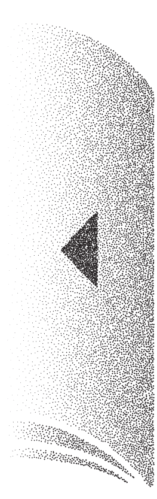

격리된 온실에서. 궁궐의 도시, 서울? 그곳은 어떤 곳일까.
재현을 폐기하는 데 이르는 길을 가리키고 있다. 나는 매일 밤 홀로 대화를 시작한다.
실리의 골격을 닮은 문장이 (…) 달라지는 걸 지켜보는 게 좋았다.
하나둘씩 반짝이기 시작한다.
애벌레는 플라스틱을 먹을 수 있다.
"지옥은 바로 타인들이야”.
혼자서 명절을 쇨 수는 없을까? 셀은 표 편집의 기본 단위가 됩니다.
따라란- 박수 짝짝- 변신완료!
“단 하나의 아름답고 은유적인 문장을 생각했어.”
‘예술적’이지 않은 작품을 만들 수 있을까?
시네도키 식물원은 접어서 보관할 수 있다.
기억 조각은 켜켜이 쌓여 공간의 기억이 됩니다.
보이지 않는 OO들.
모두 내 삶에서 일어난 일.
그것은 글이라는 매체의 의의를 지키는 일입니다.